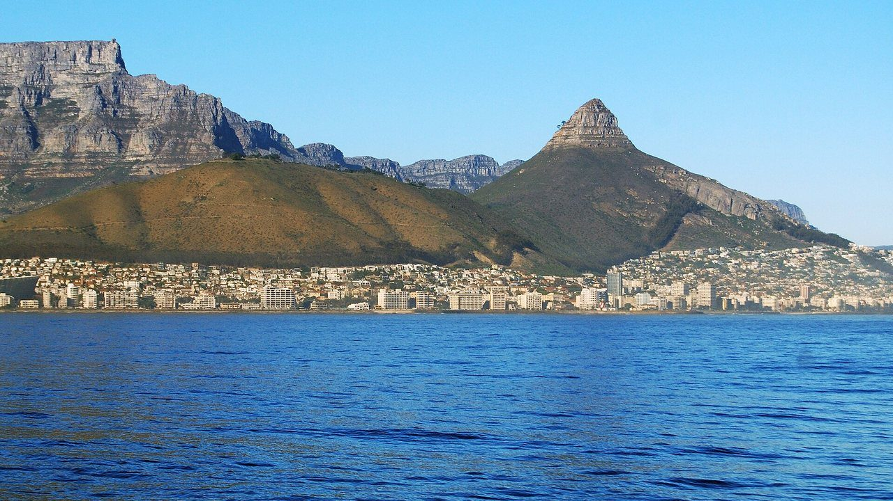

Race, Sea Point, Cape Town

Behind
Best +0:01
371W
Target 418 W-47 W
- Cadence
- 87rpm
- Heart
- 140bpm
- Speed
- 26.5km/h
Cool-down27 of 27
1:27
Finish
+0.0%
10 m climbed
7.87 km
10
Resistance / 32
Solo races your best-time ghost: position reads Ahead or Behind, and solo alone gets a Pause button. Frozen at 18:33.